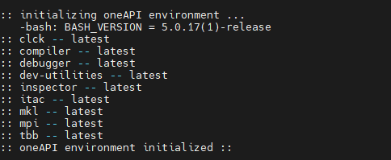

软件安装#
Matlab#
大部分软件都是免费的，但有些软件是商业软件需要配置密钥。这里只介绍 Matlab 的激活。 为了离线也能正常使用，如果是清华的同学，建议使用清华账户激活，仅对个人用户有效。
前提先连上校园网，运行 matlab, 出现以下情况时，直接点击 Next

按步骤，根据清华邮箱激活即可，如果没有注册，可以用邮箱注册。

另外，在安装 matlab 的时候，请选择网络版安装，不要使用清华邮箱激活安装，否则只能是安装的用户可以打开 matlab, 其他用户不能打开。安装网络版后，再将 licenses 中的 network.lic 文件删除即可，这样就可以让其他用户通过自己清华账户激活并离线使用。网络版安装流程(网络版必须联网才能使用，不方便)，见清华 matlab 安装手册（仅校园内网访问）。
FFTW#
FFTW3 最新版下载网站https://www.fftw.org/
以FFTW 3.3.10版本为例
解压#
tar -zxvf fftw-3.3.10.tar.gz
cd fftw-3.3.10
安装#
默认安装， 默认安装到/usr/local/bin
./configure
make -j64 ##多线程编译，取决有多少核
sudo make install
如果要自定义安装路径
./configure --prefix=/opt/fftw
make -j64
sudo make install
卸载#
sudo make uninstall
其他./configure 选项见https://www.fftw.org/fftw3_doc/Installation-on-Unix.html
或者
./configure --help
配置#
在编译时添加以下编译选项即可
-I/opt/fftw/include -L/opt/fftw/lib -lfftw3 -lm
其他#
如果使用oneAPI中的mkl内的fftw3，加载oneAPI环境后，只需要在编译的时候添加以下编译选项即可
-lmkl_intel_lp64 -lmkl_intel_thread -lmkl_core -liomp5 -lmkl_intel_thread
oneAPI Toolkits#
intel官网提供的说明,点击阅读原文可链接官网

我们仅需要oneAPI Base Toolkit中的MKL库，以及oneAPI HPC Toolkit.
下载与安装#
可以选择download, 跟随页面提示，选择下载版本。在这里我们的选择为：
在linux服务器上（前提已经连上校园网），可以通过官网提供的下载命令按照步骤安装即可
基础包（主要为了MKL）
wget https://registrationcenter-download.intel.com/akdlm/irc_nas/18673/l_BaseKit_p_2022.2.0.262_offline.sh
sudo sh ./l_BaseKit_p_2022.2.0.2
高性能计算包(MPI, Fortran)
wget https://registrationcenter-download.intel.com/akdlm/irc_nas/18679/l_HPCKit_p_2022.2.0.191_offline.sh
sudo sh ./l_HPCKit_p_2022.2.0.19
如果官网有最新版本，请下载最新版本
注意
基础包中，我们只需要MKL,其他的看自己的需求选择。在安装过程中选择Accept & configure install, 关闭其他暂时不需要的模块。(使用空格进行选择或者取消选择)。 让其默认安装在路径/opt/intel/oneapi即可


配置#
进入个人的bashrc编辑：
vim ~/.bashrc
添加source
source /opt/intel/oneapi/setvars.sh --force
加载环境变量，如果mpi不起效果，请额外添加HPC的环境变量
source /opt/intel/oneapi/compiler/202x.x.x/env/vars.sh ##202x.x.x为对应的版本好，具体请根据具体情况填写
最后source bashrc
source ~/.bashrc
输出下列信息，显示安装成功。然后就可以正常使用mpiifort, ifort 以及mkl. 